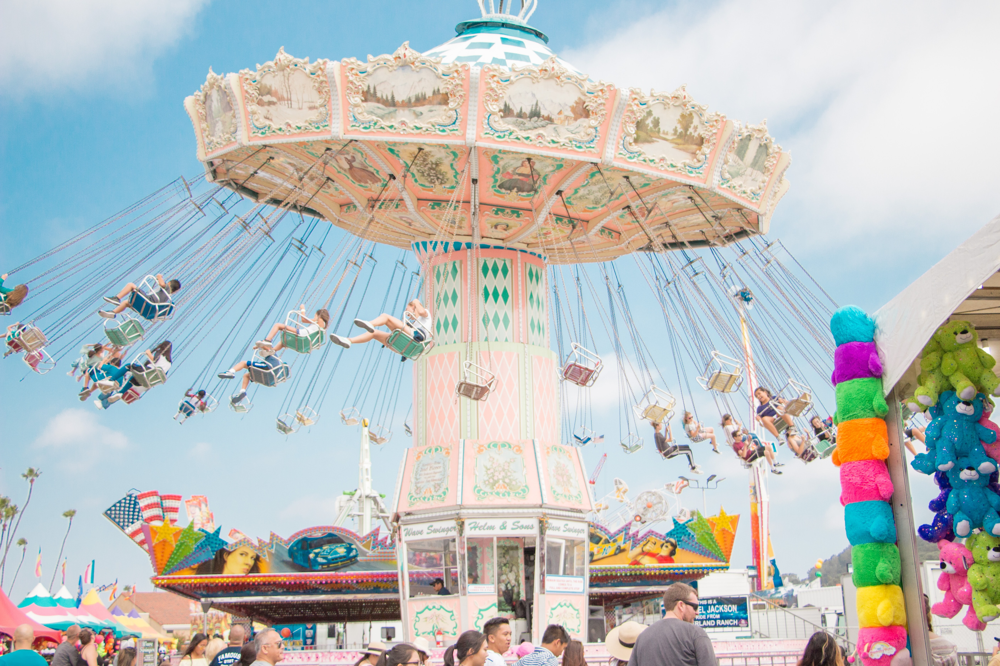

E-World is the theme park that surrounds Woobang Tower :the most noticeable feature of the Daegu skyline.
The area around the tower was remodeled as a European-style park and opened to the public in March 1995. It features a waterfall, fountains, lighting displays, and flowers, as well as rides, exhibition and performance halls, and restaurants. E-World has several plazas characterized by different themes; major plazas include Entry Plaza, Central Plaza, Children’s Plaza (playground), and Young Town Plaza.